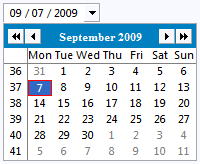
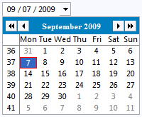
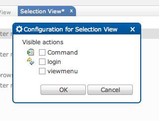
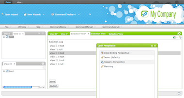
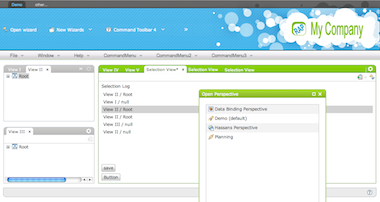

RAP 1.3 - New and Noteworthy
Here are some of the more noteworthy things that are available with RAP 1.3 (June 23rd, 2010).
This list shows all bugs that were fixed.
CSS Gradients and Rounded Borders
The RAP theming now supports gradients and rounded borders for many
widgets.
Both features are implemented using vector graphics (SVG/VML) on the
client-side.
Of course, this works with all browsers supported by RAP.
For gradients we followed the CSS syntax implemented by Safari, as there is no official CSS syntax around. Beside a start color and an end color, you can also define any number of intermediate steps. Currently, only vertical linear gradients are supported.
For gradients we followed the CSS syntax implemented by Safari, as there is no official CSS syntax around. Beside a start color and an end color, you can also define any number of intermediate steps. Currently, only vertical linear gradients are supported.
background-image: gradient(
linear, left top, left bottom,
from( #ffffff ),
color-stop( 48%, #f0f0f0 ),
color-stop( 52%, #e0e0e0 ),
to( #cccccc )
);
For rounded borders, we followed the approach outlined in the
CSS Backgrounds and Borders Module.
You can set rounded borders using the border-radius
property, even a different radius for every corner is possible.
border: 2px solid #005092;
border-radius: 6px;
New API added
A large set of missing SWT API has been added.
This will make it easier to reuse existing code or to utilize new
features.
This list is just a selection:
-
Widget: getListeners(int), isListening(int), reskin(int)(andSWT.Skinevent) -
Control: update(), isReparentable(), setParent() -
Composite: layout(Control[], int), setLayoutDeferred(boolean) -
Device: getDPI(), getFontList(String, boolean), getDepth() -
Display: beep(), close(), disposeExec(), getSystemCursor(int), getCursorLocation(), update(), addListener(), removeListener() getAppName(), setAppName(String), getAppVersion(), setAppVersion(String), findDisplay(), getSyncThread(), getCursorControl(), SWT.CloseandSWT.Disposeevents -
SWT: getVersion(),style flagsTOOL, SHEET, CURSOR_NO, CURSOR_APPSTARTING, SYSTEM_MODAL,andPRIMARY_MODAL,eventsMenuDetect, Armand its typed counterparts -
Shell:default constructor,setImages(Image[]), getImages(), getMinimumSize(), setMinimumSize(int, int), setMinimumSize(Point), setFullScreen(boolean), getFullScreen(), setModified(boolean) -
Tree: select(TreeItem), deselect(TreeItem), getItemHeight(), TreeItem#getTextBounds(int) -
Table: showColumn(TableColumn) -
List: getTopIndex(), setTopIndex(), showSelection(), deselect(int), deselect(int, int), deselect(int[]) -
Text: getCaretPosition(), getText(int, int), setMessage(String), getMessage(), setEchoChar(char), getEchoChar() -
Combo: getSelection(), setTextLimit() -
Spinner: getText(), getTextLimit(), setTextLimit(int), setDigits(int) -
ProgressBar: setState() -
ToolBar getItem(Point) -
TabFolder: getItem(Point), TabItem#getBounds() -
CTabFolder: setSelectionBackground(Image), setShowClose(boolean), setUnselectedImageVisible(boolean), setSelectionBackground(Color[],int[]) - and many more ...
Help Events
It is now possible to attach help listeners to controls and menus.
These events are generated when help is requested for a control or
menu, typically when the user presses F1.
Infrastructure for client-side unit tests
The new Javascript-Testrunner enables developers to write client-side
tests for their custom-widgets using a JUnit-like syntax. The
TestRunner also includes tools to simulate client-server communication
and user-interactions. A simple test-case might look like this:
If any assert fails, the TestRunner will inform the developer via its very simple UI and freeze Qooxdoo to ease debugging.
The project is located in the RAP Source Code Repositry under
qx.Class.define( "com.example.widgets.tests.CustomWidgetTest", {
extend : qx.core.Object,
members : {
testText : function() {
var widget = new com.example.widgets.CustomWidget();
widget.setText( "Hello World!" );
assertEquals( "Hello World!", widget.getText() );
}
}
} );
If any assert fails, the TestRunner will inform the developer via its very simple UI and freeze Qooxdoo to ease debugging.
The project is located in the RAP Source Code Repositry under
runtime.rwt.test/org.eclipse.rap.rwt.q07.jstest.
DateTime DROP_DOWN
The DateTime widget now supports the

The appearance of the drop-down button can be changed with CSS in the same way like in Combo.
SWT.DROP_DOWN style.
DateTime dateTime = new DateTime( parent, SWT.DATE | SWT.DROP_DOWN );

The appearance of the drop-down button can be changed with CSS in the same way like in Combo.
Compression Turned Off by Default
Until now, responses sent by RAP were compressed using gzip. When
running on Tomcat, this could lead to character garbage being delivered
to the browser (see
bug
259977).
Therefore we decided to turn off compression in RAP by default (bug 285669). Beside the issue in Tomcat, compression is a task that should rather be done by the servlet container to give administrators better control over the setup.
Compression can be turned on by specifying the VM argument
Therefore we decided to turn off compression in RAP by default (bug 285669). Beside the issue in Tomcat, compression is a task that should rather be done by the servlet container to give administrators better control over the setup.
Compression can be turned on by specifying the VM argument
org.eclipse.rwt.compression=true. This is the default
setting for newly created launch configurations.
Non-shared SWT Resources
Constructors for the following resources were implemented
With this change, also
CursorColorFontImage
Graphics#get*) are still the
recommended way for dealing with resources in RWT.
If single-sourcing is desired and the extra memory is justifible,
using resource-constructors might be considered.
With this change, also
dispose() and
isDisposed() were introduced.
Even though these methods exist for all resources (shared and non-shared)
it is considered an error to disposed of factory-created (shared)
resources and an IllegalStateException is thrown in this
case.
Browser History
New API has been added to interact with the browser's history stack.
The
To see the browser history support in action, see the RAP Examples
IBrowserHistory implementation can be obtained via
RWT.getBrowserHistory().
To create a new history entry, you can use its createEntry()
method. In order to receive notification of user-directed changes to the
current history entry, use addBrowserHistoryListener().
To see the browser history support in action, see the RAP Examples
Customizable focus indicator
We implemented a themeable focus indicator for buttons.
This allows to show the focus rectangle inside the buttons.
Drag and Drop
RAP now supports Drag and Drop. The user can use the mouse and keyboard
the way he is used to in his desktop applications to move, copy or link
data. The API is SWT-compatible, using
This first version still has some limitations, in particular: feedback- effects (e.g. for trees and tables) are missing, the escape key can not be used to cancel a drag, and the operationChanged-event is not yet thrown. We expect to deliver those features soon.
To try out drag and drop online, see the RAP Examples (go to the List page).
DragSource,
DropTarget and Transfer.
This first version still has some limitations, in particular: feedback- effects (e.g. for trees and tables) are missing, the escape key can not be used to cancel a drag, and the operationChanged-event is not yet thrown. We expect to deliver those features soon.
To try out drag and drop online, see the RAP Examples (go to the List page).
Changes to ISessionStore
The
Instead their return value indicates whether they completed successfully. Due to the multi-threaded environment, it is not possible to reliably determine the outcome before calling one of these methods (isBound() could have changed meanwhile). Please see the JavaDoc for more details.
We don't expect to break existing clients, the changes are documented here for completeness. However, if you are having trouble file a new bug or re-open bug 278258
ISessionStore has undergone slight API changes.
The methods addSessionStoreListener,
removeSessionStoreListener
and getAttributeNames are affected in that they don't throw
an exception anymore when being invoked on an invalidated session.
Instead their return value indicates whether they completed successfully. Due to the multi-threaded environment, it is not possible to reliably determine the outcome before calling one of these methods (isBound() could have changed meanwhile). Please see the JavaDoc for more details.
We don't expect to break existing clients, the changes are documented here for completeness. However, if you are having trouble file a new bug or re-open bug 278258
BrowserFunction
With the support for SWT BrowserFunctions it is now possible to register
custom Java functions for a Browser widget and call them from JavaScript.
In addition it allows you to pass any parameters from JavaScript to the
Java function.
Thanks to the donation of henzler informatik gmbh we were able to acquire additional resources to have the BrowserFunction implemented for M5.
Thanks to the donation of henzler informatik gmbh we were able to acquire additional resources to have the BrowserFunction implemented for M5.
ImageData
ImageData and related classes (ImageLoader,
ImageLoaderEvent, etc.) are now public API. As a result, the
Image(Device,ImageData) constructor is also available.
The factory methods (Graphics#getImage) are still the recommended way for creating image in RWT. If single-sourcing is desired and the extra memory is justifible, using constructors might be considered.
FontMetrics
In order to increase code-resuse for text measurement from SWT, we
introduced the classes
GC and FontMetrics.
getAverageCharWidth, getHeight from
FontMetrics and getCharWidth,
stringExtent, textExtent from GC
delegate to the respective methods from class Graphics.
Theme Contributions
It is now possible to contribute CSS code to existing themes using the
extension point
org.eclipse.rap.ui.themes.
This way, plug-in developers can easily add CSS rules for their controls
without the need to copy and extend an existing theme.
ServiceHandlers
It is now possible to contribute

ServiceHandlers via
extensions using the extension point
org.eclipse.rap.ui.serviceHandler.
This way, plug-in developers can easily declare ServiceHandlers
instead of registering them programmtically.
Theme Extensions
The theming was extended in serveral places
-
The Shell has a new themeable element called
Shell-DisplayOverlay. When a modal shell with is opened, there is a usually invisible element that is blocking all user-interactions with what is behind the shell. This "overlay" can now be themed to visualize this behaviour, using a semi-transparent background-color or image.
For example:Shell-DisplayOverlay { background-image: none; background-color: #000000; opacity: 0.5; }
-
We introduced the
opacity-property on the following widgets:
Label,CLabel,Composite,Menu,Menuitem,ToolBar,ToolItem,ToolTipandProgressBar-Indicator
This is an easy way to achieve semi-transparency. Be aware that there are currently two unresolved issues regarding its use in Internet Explorer: Bug 302713 and Bug 303603
In some cases those can trigger minor graphical glitches. - The Combo and CCombo widgets now have a styleable FocusIndicator like Button.
- The Text widget now supports backgroundGradient.
-
Tables with alternating row colors, combined with vertical-only grid
lines are a common design that was so far not supported by RAP. With
the introduction of the
verticalandhorizontalstates for theTable-GridLine-element, this is now possible:Table-GridLine { color: #d0d0d0; } Table-GridLine:horizontal { color: transparent; }
-
We now support animations as part of the theming. They allow for simple
transition-effects to create a more organic user-experience. Currently
only a few widgets (
Button,ToolItem,ToolTip,Shell-DisplayOverlay,Menu) and effects are available, but you can expect more in the future. The API is a subset of the CSS3 Working Draft for animations. To define an animation you need to set three values (effect, duration, and timing function) and you can define several per widget.
For example, to create an animated hover-effect for buttons, the syntax could look like this:Button : { animation: hoverIn 200ms linear, hoverOut 500ms ease-out; }
Graphics Context
A subset of the graphics context (GC) from SWT is now available in RAP.
It can be used for basic drawing on the the

The graphics are rendered on HTML5 Canvas on the client, for Internet Explorer, a VML-based (vector-graphics) emulation is used. The performance on IE may degrade drastically when the number of shapes drawn exceeds a limit of about 500.
To see the graphics context in action, try out the Canvas page in the RAP Examples.
Canvas widget:
Canvas canvas = new Canvas( parent, SWT.NONE );
canvas.addPaintListener( new PaintListener() {
public void paintControl( PaintEvent event ) {
Rectangle rect = canvas.getClientArea();
event.gc.drawOval( 0, 0, rect.width - 1, rect.height - 1 );
}
} );
The graphics are rendered on HTML5 Canvas on the client, for Internet Explorer, a VML-based (vector-graphics) emulation is used. The performance on IE may degrade drastically when the number of shapes drawn exceeds a limit of about 500.
To see the graphics context in action, try out the Canvas page in the RAP Examples.
Font Dialog
RAP now contains an implementation of the SWT FontDialog.

Cheatsheet support
With the support of the FormText widget we now provide an
implementation of the cheatsheets plugin known from RCP. With this
it's possible to provide step-by-step cheatsheets with direct
integration of the application itself.
See the Eclipse help for more informations about cheatsheets and how to use them.
See the Eclipse help for more informations about cheatsheets and how to use them.
Layout Override Mechanism
To customize an existing RAP design was not possible without touching
the providing bundle. Therefore we introduce a new mechanism to make it
much easier for adding or replacing own contributions to a design.
The mechanism makes it possible to replace existing LayoutSets. Therefore LayoutSet elements from the

It's important to use the same identifiers for images, fonts, colors and positions within the
The mechanism makes it possible to replace existing LayoutSets. Therefore LayoutSet elements from the
org.eclipse.rap.ui.layouts extension point got a new
optional attribute called overridesId. To override a single LayoutSet
a developer has to create a new extension of
org.eclipse.rap.ui.layouts and give it the same id as the
Layout which contains the LayoutSet to override. After this he just
has to declare a new LayoutSet element and set the overridesId to the
original one.
It's important to use the same identifiers for images, fonts, colors and positions within the
ILayoutSetInitializer.
Tooltips for TableViewer
The

TableViewer can now display tooltips for its content.
It can be activated by calling
ColumnViewerToolTipSupport#enableFor().
Afterwards you need to override
CellLabelProvider#getToolTipText(Object) and have it
return the respective tooltip text. Other tooltip-related methods
(getToolTipBackgroundColor, etc.) are not supported.
HelpSystem support
With the support for the Eclipse Help infrastructure, you're now able
to integrate the well-known help system into your RAP applications.

Currently RAP only provides the infrastructure to plug in a help system implementation. Depending on your needs you can go ahead and use a simple implementation as shown in our FAQ. In case you are already using the cheatsheets plugin with links to the help system, please be sure to include a help system implementation. Otherwise your users will not be able to open the associated help topics.
Currently RAP only provides the infrastructure to plug in a help system implementation. Depending on your needs you can go ahead and use a simple implementation as shown in our FAQ. In case you are already using the cheatsheets plugin with links to the help system, please be sure to include a help system implementation. Otherwise your users will not be able to open the associated help topics.
ControlDecoration
JFace ControlDecoration support has been added. Clients can now
decorate any kind of control with an image and description text shown
when the user hovers over the image.
Multi-locale extension registry
Since M4, the Equinox
extension registry is able to handle multiple locales
(see bug
244468
for details). A socalled LocaleProvider service is used to determine the
current locale.
The RAP workbench now registers a LocaleProider service that returns the locale based on the RWT locale of the current session.
Please note that you have to add a new system property in order to activate the multi-language support for Equinox:
With these changes the
The RAP workbench now registers a LocaleProider service that returns the locale based on the RWT locale of the current session.
Please note that you have to add a new system property in order to activate the multi-language support for Equinox:
-Declipse.registry.MultiLanguage=true
With these changes the
org.eclipse.rap.equinox.registry
fragment is rendered obsolete.
Servlet Filter support
Since M5, there is support for Servlet Filters in Equinox. See the
3.6M5 New & Noteworthy for details.
IApplication support
With support for
IApplications, you're now able to start
a RAP application the same way as it is possible in RCP. This means
that you don't need to provide an IEntryPoint
implementation.
<extension
id="myapp"
point="org.eclipse.core.runtime.applications">
<application visible="true">
<run class="org.eclipse.rap.demo.DemoWorkbench"></run>
</application>
</extension>
As stated in this example, the entrypoint parameter to access the
application is equal to the id of the extension. This means the
application is available at host:port/rap?startup=myapp.
In case you want to refer to your application in the branding extension
point (e.g. as default entrypoint), you have to use the fully-qualified
name of the extension (e.g. org.eclipse.rap.demobundle.myapp).
JFace 3.6
We adopted the JFace 3.6 code base to make new JFace features available and
increase code-reuse between RAP and RCP. Some of the more noteworthy changes
are listed below:
PixelConverterandDialog#convert...methods to convert between pixels and DLUs and vice versaMessageDialog#CONFIRMandMessageDialog#open()RowLayoutFactoryandRowDataFactory- Enhancements in
TableColumnLayoutandTreeColumnLayout ConfigureColumns, a column configuration dialog for trees and tablesArrayContentProvider#getInstanceICheckStateProviderfor tree- and table-viewer with checkboxes
Forms 3.6
We adopted the Forms 3.6 code base too. New API added:
MasterDetailsBlock#createContent( IManagedForm, Composite )
New Configuration Dialog
To provide a more consistent design we replaced the configuration
dialog of the Business design with a more lightweight implementation.
Additionally we added an effect called
Lightbox
which occurs when the dialog is open. To improve the usability of
the design we also have disabled the configuration button if a view
has no actions or viewmenu.

Fancy design
With RAP 1.2 we released a new look and
feel called business design. With this design we wanted to show
how RAP can look like in a serious sector. Now we introduce another
example called fancy design. This design shows that RAP is a
really modern technology and can look like one too.
To use this design a developer should follow the steps from the business design and replace the servlet name with "fancy".

Please note that we changed a few IDs of some of the
To use this design a developer should follow the steps from the business design and replace the servlet name with "fancy".

Please note that we changed a few IDs of some of the
LayoutSets. So, if you have replaced some LayoutSets please
update the overridesId attributes by removing the
word "business".
Theming and new designs
We extended the theming for a couple of widgets (such as CTabFolder,
CLabel, Combo, Spinner and DateTime) and improved the new "fancy"
design e.g. the support for standalone views was added.
Widget Theming
Almost all RWT widgets got a new theming. The theming is coupled with the
design examples. So, we have created two themes. One for the
business design which uses a blue color scheme and one for the
fancy design which uses a green color scheme. To activate one of these
themes just add the bundle
org.eclipse.rap.design.example
to your launch configuration and set the theming id in your branding to
org.eclipse.rap.design.example.business.theme or
org.eclipse.rap.design.example.fancy.theme.
Coolbar
Before RAP 1.3 M5 the CoolbarManager has renderd the contribution items
into the main Coolbar. Since M5 the items render themselves. This results
in more flexibility and you can use all items which implements
IContributionItem and the method
fill(ToolBar parent, int index). To render the items into the
UI a ToolBar is used instead of a CoolBar. Since
1.3 M2,
RAP has a new ToolBar implementation which provides more
opportunities for
theming. This gives you the possibility to style the
ToolBar in a way that fits more with your
RAP design. MenuBar
The
interaction desing API gives you the possibility to style a Shell's
MenuBar. With RAP 1.3 M5 we have created a whole new
MenubarManager implementation to provide a much more flexible
menu. Therefore, we use a ToolBar to provide you a high themable
menubar. View contribution item visibility
We have extended the branding to make all view contribution items visible
by default while using one of the
new designs. The
presentationFactory subelement of the
org.eclipse.rap.ui.branding extension point got a new
attribute called viewActionsVisible. The value of this
attribute is false by default. So, all view contribution
items are invisble to provide a cleaner UI. When changing this value to
true, all items will be visible and the
configuration menu will be disabled.
Session Timeout Option
The RAP Application Launcher now has an option to specify the session
timeout in Seconds. This can come in handy if you whish to test session
shutdown scenarios and saves you from remembering the lengthy
org.eclipse.equinox.http.jetty.context.sessioninactiveinterval
VM argument.
Styled RAP Templates
We have added the new designs and themes to the RAP templates. The old
templates made usage of the default theme. We changed this for two of
the three existing RAP templates. The following changes were made:
- RAP Application with a view uses the fancy theme now.
- RAP Maildemo uses the business design now.
EMF on RAP
We are proud to announce that EMF
now provides RAP support out of the box. To see how it works, please refer
to this wiki page.
Riena on RAP
Initial support to run Riena Ridgets on RAP
has been provided by the Riena team. Please see
this blog
and the Riena on RAP
wiki page for further details.
EPP Package
The Eclipse Packaging Project now
offers an Eclipse for RCP/RAP Developers package from its
download page.
It is a complete set of tools for developers who want to create Eclipse plug-ins, Rich Client or Rich Ajax Applications (RCP + RAP).
It is a complete set of tools for developers who want to create Eclipse plug-ins, Rich Client or Rich Ajax Applications (RCP + RAP).